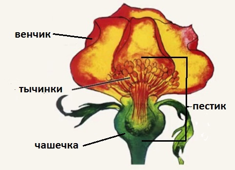

Введение
На уроке мы узнаем о разнообразии семейства розоцветных растений, познакомимся с дикорастущими и культурными представителями, рассмотрим особенности строения цветка и плода. Разберемся с видоизменениями вегетативных органов.
Представители семейства розоцветные
Представителями семейства могут быть травы, кустарники, деревья.
Одним из представителей является травянистое розоцветное растение земляника (рис. 1), клубника.
Рис. 1. Земляника
Дикорастущие представители травянистых розоцветных: гравилат (рис. 2), манжетка (рис. 3), гусиная лапка (рис. 4), репешок (рис. 5).
Рис. 2. Гравилат
Рис. 3. Манжетка

Рис. 4. Гусиная лапка
Рис. 5. Репешок
К кустарникам-розоцветным относится роза, шиповник (дикорастущая роза), спирея, ирга, боярышник, калина (рис. 6).
Рис. 6. 1 – роза, 2 – шиповник (дикорастущая роза), 3 – спирея, 4 – ирга, 5 – боярышник, 6 – калина
К деревьям – представителям семейства принадлежат такие плодовые культуры, как слива, вишня, яблоня, груша, персик, абрикос (рис. 7), черешня, на востоке – сакура (рис. 8).
Рис. 7. 1 – слива, 2 – яблоня, 3 – персик, 4 – вишня, 5 – груша, 6 – абрикос (Источник)
Рис. 8. Черешня; сакура (Источник)
Дикорастущие деревья семейства розоцветные – это рябина, терн (рис. 9) и еще множество других растений.
Рис. 9. Рябина; терн (Источник)
Цветок
Как у всех двудольных растений, цветок имеет двойной околоцветник, чашечку из чашелистиков и венчик из лепестков. Чашечка пятичленная, имеет пять чашелистиков в цветке. Венчик также пятичленный, в нем пять лепестков, исключение составляют растения, которое специально вывели. Тычинок в цветке множество, пестик один, в некоторых случаях бывает большое количество пестиков (рис. 10).

Рис. 10. Строение цветка
Плод
Плоды многообразны, рассмотрим строение на примере плода сливы, такие плоды называют костянка. Он имеет сочный околоплодник и в центе семя, семенная кожура твердая, а семена называют косточками (рис. 11).
Рис. 11. Плод сливы (Источник)
Соцветие
У представителей семейства бывают соцветия или одиночный цветок крупного размера, например роза. Соцветия в виде кисти (рис. 12) встречаются у репешка, лапчатки и т. д.
Рис. 12. Соцветие кисть
Соцветия в виде щитка (рис. 13) встречаются у рябины, вишни и т. д.
Рис. 13. Соцветие щиток
Изменение вегетативных органов
У клубники имеются боковые побеги – столоны (рис. 14). Продолжительность жизни столона – 1 год, за это время он отрастает в сторону и укореняется, тем самым растение размножается вегетативно, а также захватывает новую территорию для расселения.
Рис. 14. Столон клубники (Источник)
Встречаются у розоцветных шипы, например у шиповника (рис. 15).
Рис. 15. Шиповник
У лапчатки серебристой и лапчатки прямостоячей в корневище находятся лекарственные вещества.
У терна и боярышника есть острые выросты, которые больше, чем шипы, и служат для защиты от растительноядных животных, называются они колючками (рис. 16).Колючки представляют собой боковые ветки, острые и твердые.
Рис. 16. Колючки боярышника
Листья розоцветных имеют боковые выросты на черешке – прилистники (рис. 17).
Рис. 17. Прилистника на листках гравилата
Заключение
Мы рассмотрели семейство розоцветных, особенности их строения. Ознакомились с представителями семейства.
Список литературы
1. Биология. Бактерии, грибы, растения. 6 кл.: учеб. для общеобразоват. учреждений / В.В. Пасечник. – 14-е изд., стереотип. – М.: Дрофа, 2011. – 304 с.: ил.
2. Тихонова Е.Т., Романова Н.И. Биология 6. – М.: Русское слово.
3. Исаева Т.А., Романова Н.И. Биология 6. – М.: Русское слово.
Дополнительные рекомендованные ссылки на ресурсы сети Интернет
1. Интернет портал «Биология в лицее» (Источник)
2. Интернет портал «Экосистема» (Источник)
3. Интернет портал «Биология старые учебники по ботанике, зоологии, анатомии, общей биологии» (Источник)
4. Интернет портал «Прекрасный мир растений» (Источник)
Домашнее задание
1. Какие известные вам растения относятся к семейству
розоцветных?
2. Какое строение имеют цветки розоцветных растений?
3. Какие плодовые растения семейства розоцветных вам известны?